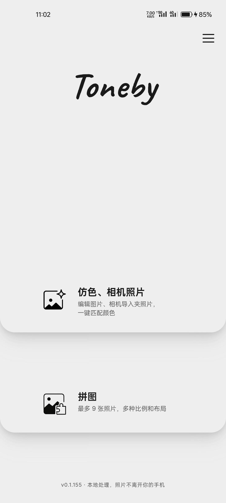
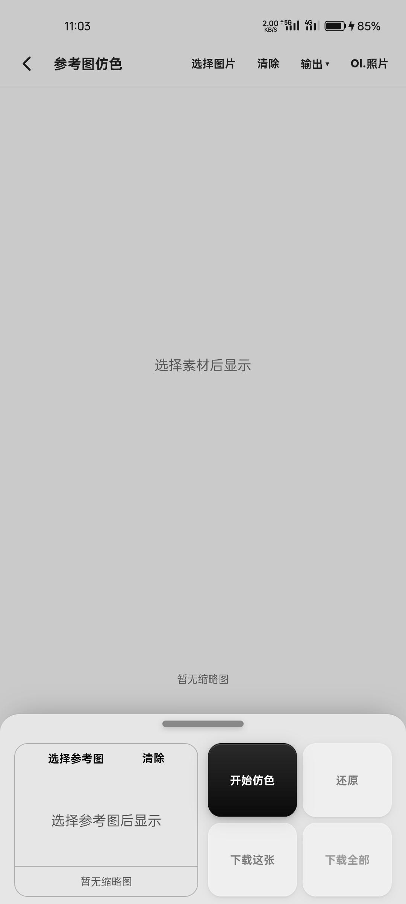
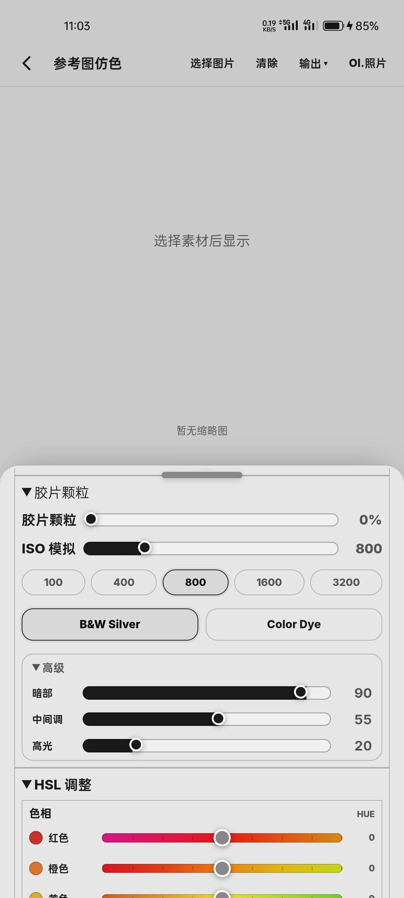
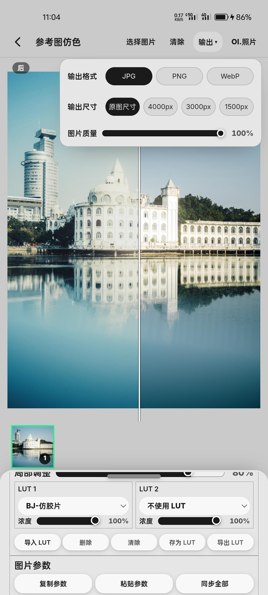
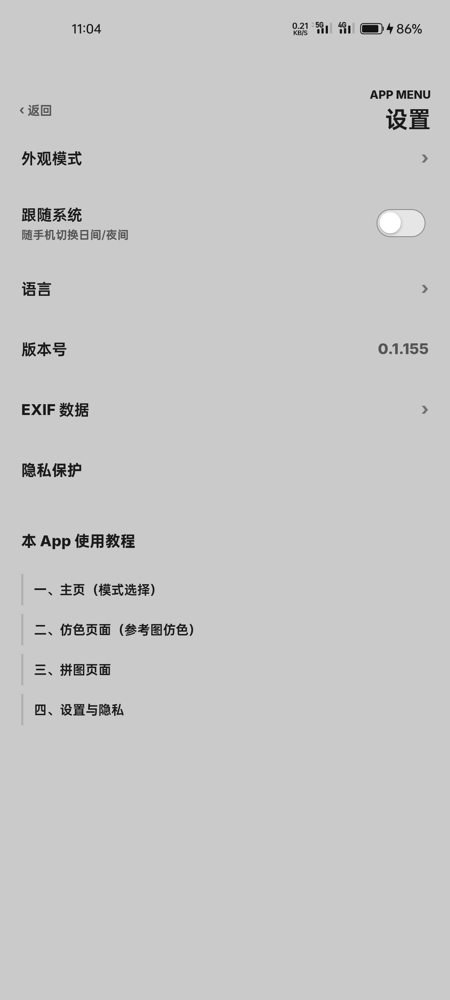

01
Film Color Engine
Match the exact tones of any reference photo. Authentic 3D LUTs, film grain, halation and bloom — rendered locally with GLSL precision, down to the curve.
Transform your phone into a reference-color film camera. Toneby matches the exact tones of any reference photo with authentic 3D LUTs, film grain and a real-time LUT camera — processed entirely on your device.

Match the exact tones of any reference photo. Authentic 3D LUTs, film grain, halation and bloom — rendered locally with GLSL precision, down to the curve.
Every photo is processed 100% on your device. Zero uploads, zero accounts, zero tracking. What happens on your phone stays on your phone.
Shoot with real-time film LUTs, import your own .cube files, and finish with multi-ratio grid collages. One studio, complete workflow.
A lightweight, 100% offline alternative to VSCO presets and Lightroom Mobile profiles — built for creators who demand reference-accurate color and absolute privacy.

Pick any reference photo and one tap matches its tones onto your shot. A gallery-style home keeps your work focused — like a private exhibition.

Match strength, local adjustment, dual LUT layers and per-channel curves — every parameter you need, nothing you don't. Copy, paste and sync settings across photos.

ISO-simulated grain from 100 to 3200 with black-and-white and color-dye modes, plus per-hue hue, saturation and luminance control. Analog texture, digital precision.

JPG, PNG or WebP. Full resolution or quick-share sizes. Full control over quality — batch export the whole set when the look is locked.

Light and dark modes, four languages, and full control over which EXIF data — GPS, camera, shooting settings — stays embedded when you share.
Explore the full film-style collection — G200T, 5207T, 5219T, D55T and more. Every look ships inside the app, ready for your photos and your camera.